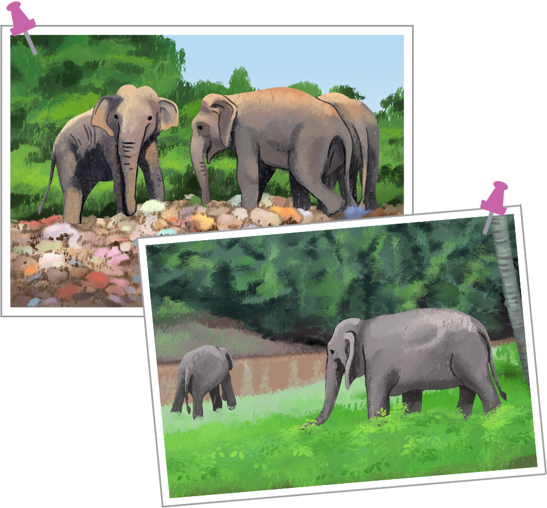

마음
똑똑
만약에 내가 다음 사진 속 동물이라면 어떤 감정을 느낄지 써 봅시다.

만약에 내가 사진 속 동물이라면?
[쓰레기 산의 동물] 냄새도 고약하고 정말 살기 힘들어요. 깨끗한 언덕에서 살고 싶어요.
[자연 속 동물] 깨끗하고 푸른 숲에서 살아서 행복해요. 계속 멋진 곳에서 살고 싶어요.
Tip
삶의 터전이 오염되고 파괴된 곳이나 잘 가꿔진 곳에서 살아가는 동물이 됐다고 가정해 보고, 그들의 감정을 상상해 글로 써 봅시다.